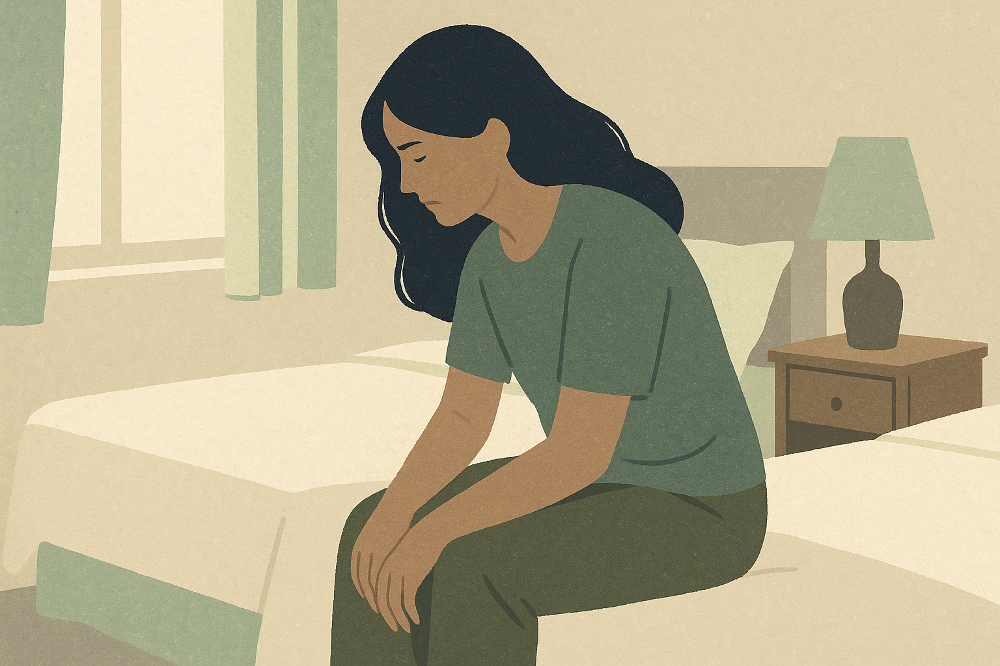
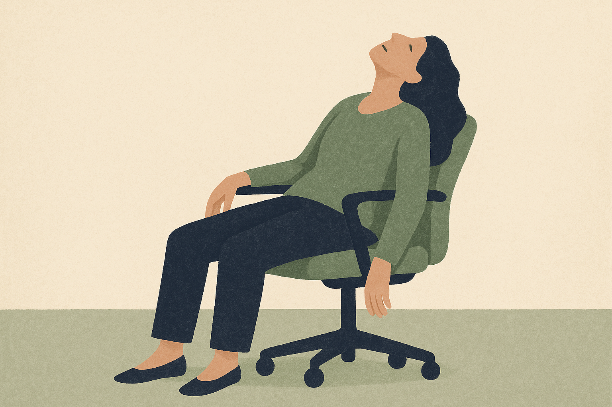
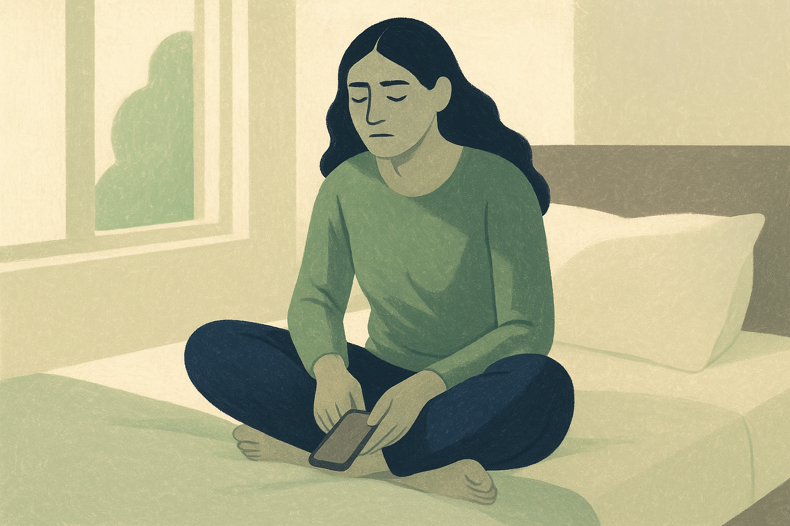
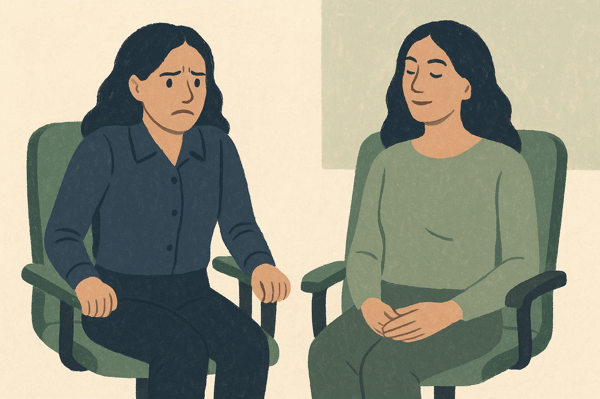
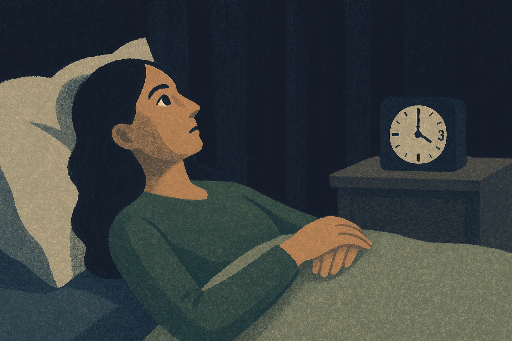
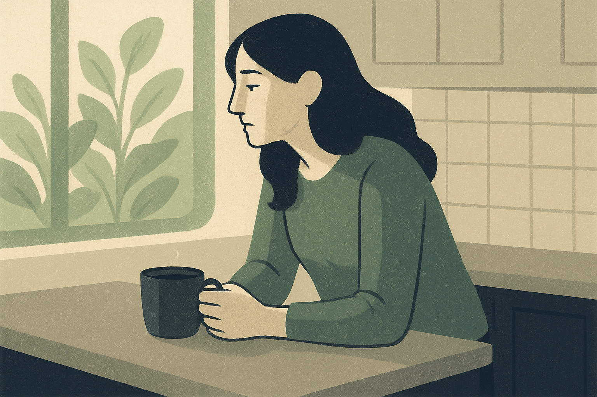

5 Reasons Why Calming Your Nervous System Won't Fix Your Anxiety

Deep breathing exercises is the reason your anxiety comes back every morning.
Tomorrow you walk into Monday without the chest tightness.
You sit in a meeting and listen — instead of managing internal panic while pretending to take notes.
No 3am rehearsal of tomorrow's conversation for the fourth time.
No white-knuckling.
You say yes to the promotion because the anxiety isn't making the decision for you.
Not by downloading another meditation app.
Not by journaling your way through the 3am spiral.
And not by squeezing in another 10 minutes of box breathing before your morning standup.
5 reasons calming your nervous system won't fix your anxiety — and what's missing underneath.
1. Deep breathing exercises Is a Manual Override — Not a Fix

You know the routine.
The chest tightens before a meeting.
You open your mouth. Slow exhale. Four counts in. Four counts hold. Four counts out.
Your heart rate drops. Your shoulders loosen. For about 20 minutes.
Then the hum comes back.
Same meeting. Same chest. Same tightness. Like nothing happened.
Deep breathing exercises does something real. It activates your parasympathetic nervous system — the part of your body responsible for calming you down.
A 2023 Stanford study confirmed it. Cyclic sighing reduced anxiety more than mindfulness meditation.
But the researchers noticed something nobody talks about.
The effect required daily practice to hold. Miss a day, lose the momentum.
A separate meta-analysis across 12 controlled trials found deep breathing produced a modest effect on anxiety — and only while the person kept doing it.
That's not a fix.
That's a manual override.
Something is happening inside your body every time this plays out.
Your nervous system has a braking mechanism. It's supposed to slow you down automatically when the threat passes.
Deep breathing exercises bypasses that mechanism entirely.
Instead of letting the system brake on its own, you're reaching under the dashboard and pumping the brake line by hand.
Every. Single. Time.
It works — the same way hand-pumping a brake line works in a car with no fluid. You get stopping power. But only while you're pumping.
Take your hands off the line and the car rolls.
That's why deep breathing feels like maintenance instead of progress.
You're not fixing the braking system. You're manually applying the brakes because the system underneath doesn't work on its own.
And the cruelest part — nobody told you the system was broken. They just kept telling you to pump harder.
You weren't wrong to try deep breathing. The technique does exactly what it promises. It's a manual brake. The problem is that nobody mentioned the hydraulic system was empty.
But deep breathing not working long-term isn't just inconvenient. The reason the effect fades points to something wrong much deeper than your breathing pattern.
2. Your Nervous System Isn't Dysregulated — It's Depleted

It's everywhere on Instagram.
"Regulate your nervous system."
"Your nervous system is dysregulated."
"Here's how to regulate your nervous system in 60 seconds."
Dysregulated. That's the word they all use.
It means your system is out of balance. Poorly trained. Bad at switching between stress mode and calm mode.
And the implication is simple — if you practice enough techniques, your nervous system will learn to regulate itself.
The problem isn't training.
It's fuel.
Your car's brake pedal works fine. The cable connecting the pedal to the brakes is fine. The brake pads have plenty of life left.
But when you press the pedal, nothing happens.
It goes straight to the floor.
Not because the pedal is broken. Not because you're pressing it wrong.
The brake fluid is gone.
The hydraulic system that translates your foot pressure into stopping power is dry. Empty. Nothing to transfer the force.
No amount of "pressing better" fixes that.
This is what's happening in your body.
In 2016, neurologist Dr. Ethan Russo published a landmark paper on a deficiency in your body's own calming molecules.
He measured the fluid around people's brains and spines. Some people were running chronically low on their own calming molecules.
Your body makes its own brake fluid. It's called anandamide — from the Sanskrit word for "bliss."
When anandamide levels are adequate, your stress response stays in check automatically. You don't have to think about calming down. Your body just does it.
This part never makes it into the content.
Chronic stress depletes anandamide.
Chronic stress increases the activity of an enzyme called FAAH — the enzyme that breaks anandamide down.
Every deadline that kept you up at 2am. Every meeting where your chest went tight. Every Sunday evening when the dread set in before the week even started.
Each one burned through more of your brake fluid.
More FAAH. Less anandamide. Less fluid.
The brake fluid doesn't just get low.
It gets low everywhere at once.
A separate study from 2014 confirmed it directly: central anandamide levels predict anxiety. Lower anandamide = higher anxiety. Every time.
So when someone tells you to "regulate your nervous system" — they're telling you to press the brake pedal harder.
The pedal isn't the problem.
The fluid is.
Your nervous system isn't broken. It's not poorly trained. It's running on empty. Dysregulated is the wrong word. Depleted is the right one. And no amount of regulation fixes a supply problem.
That would be bad enough on its own. But one of the most popular "fixes" is actually making the depletion worse.
3. Meditation Apps Train You to Be a Calmer Passenger — Not a Better Driver

You open Calm at 6am.
Ten minutes of guided breathing. A voice tells you to observe your thoughts without judgment. Let them pass like clouds.
You feel lighter. The chest loosens. You walk into your morning feeling like you might actually be okay today.
By 10am, the hum is back.
The thoughts you observed at 6am are back at 10am — and they brought friends.
Meditation apps don't promise to stop anxiety. If you read the fine print, they promise something different: a better relationship with anxiety. The ability to notice it without reacting.
That sounds wise.
But there's a problem nobody mentions.
You're still in a car with no brakes.
Meditation teaches you to be calmer while the car rolls downhill. It trains you to observe the trees passing by without panicking. To accept the feeling of acceleration without gripping the armrest.
That's useful. Being a calm passenger is better than being a panicked one.
But you're still a passenger.
The car is still rolling. The brakes still don't work. Nothing about "observing without judgment" puts fluid back in the brake lines.
A 2022 meta-analysis of meditation app studies found that Calm and Headspace produced "modest but consistent" reductions in anxiety symptoms — effect sizes around 0.23 to 0.32.
Modest.
Consistent while you keep using them.
Gone when you stop.
The researchers didn't frame it this way, but the data tells a story: meditation apps are maintenance, not repair.
The app isn't broken. The approach isn't wrong.
It's just designed for a different problem.
Meditation assumes your calming system works — it just needs better inputs. Calmer thoughts. Less reactivity. More acceptance.
But your calming system doesn't need better inputs.
It needs fuel.
The brake lines are empty. Observing the empty brake lines more peacefully doesn't fill them.
And the cruelest part — the ten minutes you spent meditating this morning felt like progress. The calm afterward felt like evidence.
It wasn't evidence of repair.
It was evidence that you're getting better at riding in a car that can't stop.
You weren't wrong to try the apps. Meditation does exactly what it promises — it changes your relationship to anxiety. The problem is that changing your relationship to a depleted system doesn't refill it.
There's a system in your body that was supposed to prevent all of this. Nobody in your feed has ever mentioned its name.
4. Your Body Has an Automatic Calming System That Most Influencers Never Mention

Every piece of "calm your nervous system" content focuses on the same thing.
The pedal.
Press the pedal differently. Press it slower. Press it in the cold. Press it in silence. Press it while focusing on your breath.
The content all focuses on the same thing.
Your body has a built-in system that regulates anxiety automatically. It's been doing it your entire life. You've just never heard its name.
Your body's built-in calming mechanism.
Your body makes its own calming molecules that help regulate your stress response automatically.
When you have enough of them, the system works on its own.
You don't have to think about calming down. You don't have to practice calming down. Your body just does it — the same way your body regulates temperature without you thinking about it.
This isn't fringe science.
Researchers call it a shock absorber for your emotions.
It absorbs the hit so you don't have to.
The primary molecule in this system is anandamide. When anandamide is doing its job, your fear center doesn't overreact to non-threats. Your decision-making brain stays in control. Your stress response fires when it should and quiets when it should.
Automatically.
The proof is genetic.
Some people carry a genetic variant called FAAH C385A. Their bodies naturally break down anandamide slower — which means they walk around with more of it all the time.
These people show reduced anxiety. Their fear center stays quiet. Their decision-making brain stays in charge.
You've met them. The colleague who handles the same pressure without the white knuckles. The friend who can sit in uncertainty without spiraling. You thought they were just wired differently.
They are. More of this molecule. That's it.
The proof from the other direction is even more stark.
A weight-loss drug called rimonabant was designed to block this calming system entirely.
Depression and anxiety spiked across patients.
Pulled from the market.
Block the system, anxiety spikes.
This system is real. It's measurable. It predicts who gets anxious and who doesn't.
It explains why your colleague handles the same meeting without gripping the chair. Same pressure. Different levels of this molecule.
And yet — scroll through a thousand "calm your nervous system" posts and you'll almost never see this system mentioned.
Because talking about this system doesn't sell deep breathing courses.
Talking about techniques does.
There was never anything wrong with you. Your body has a built-in calming system that was designed to handle anxiety automatically. Nobody told you it existed — and nobody told you it could run low.
And that leads to the part that makes all of this urgent. Because the longer you operate without knowing about this system, the deeper the problem gets.
5. The Longer You Manually Override, the More Dependent You Become

You've been managing your anxiety manually for years.
Morning deep breathing. Meditation app at lunch. Journaling before bed.
It takes more effort now than it used to.
The first time you tried deep breathing, two minutes changed your whole afternoon.
Now you need ten. Sometimes fifteen. And even then, the calm doesn't stick past dinner.
That's not tolerance. That's depletion getting deeper.
You already know from Reason 2 that chronic stress depletes your body's calming molecules.
But it doesn't stop there. The longer the depletion continues, the harder it gets to refill.
Your brain starts losing the receptors these molecules connect to. The pathways themselves start to narrow.
It's Sunday night. The dread starts building before you've even opened your laptop. You lie in bed rehearsing Monday's meeting for the third time. Your partner asks if you're okay. You say "just tired."
That dread is the sound of an empty braking system being asked to stop a car going 80.
The supply is lower than last year. The pathways are narrower than last year. And the demands keep getting steeper.
Meanwhile, every manual override technique runs on effort. You already feel this — the more hours of deep breathing you practice, the more relief you get. Fewer hours, less relief.
That's not a system.
That's a dependency.
The difference matters.
Your automatic calming system provides baseline, always-on regulation. The stress comes, the system responds, and you recover. No thought required.
Manual techniques provide effort-dependent regulation — temporary, dose-based. It works, but only while you're doing it.
Automatic is sustainable.
Effort-dependent creates dependency.
And the longer you rely on effort-dependent overrides, the more you reinforce a belief that's quietly running in the background of every anxious moment:
I am someone who needs to DO something to be calm.
That belief is wrong.
You're not someone who needs to constantly manage your internal state.
You're someone whose automatic system ran out of fuel.
The effort was never the problem. The depleted system was.
You weren't depending on deep breathing because you're weak. You were depending on it because it was the only tool that worked. The manual effort was a rational response to a system that couldn't do the job on its own.
There is a way to refill the tank.
Your Nervous System Has Been Running on Empty Long Enough

You now know the truth.
Deep breathing exercises was never designed to fix this.
The techniques weren't failing because you weren't trying hard enough.
They were failing because they were never the right tool.
Your nervous system needs something else entirely.
There's a built-in calming mechanism that's supposed to restore calm automatically.
In your body, that mechanism is starving.
On the next page, you'll learn exactly what it needs — and how to give it to your body.
This article is for informational and educational purposes only. It is not intended as medical advice and should not be used to diagnose, treat, cure, or prevent any disease or health condition. Individual results may vary. Always consult with a qualified healthcare professional before making changes to your wellness routine. The statements on this page have not been evaluated by the Food and Drug Administration.
© 2026 Green Valley Nutrition. All rights reserved.